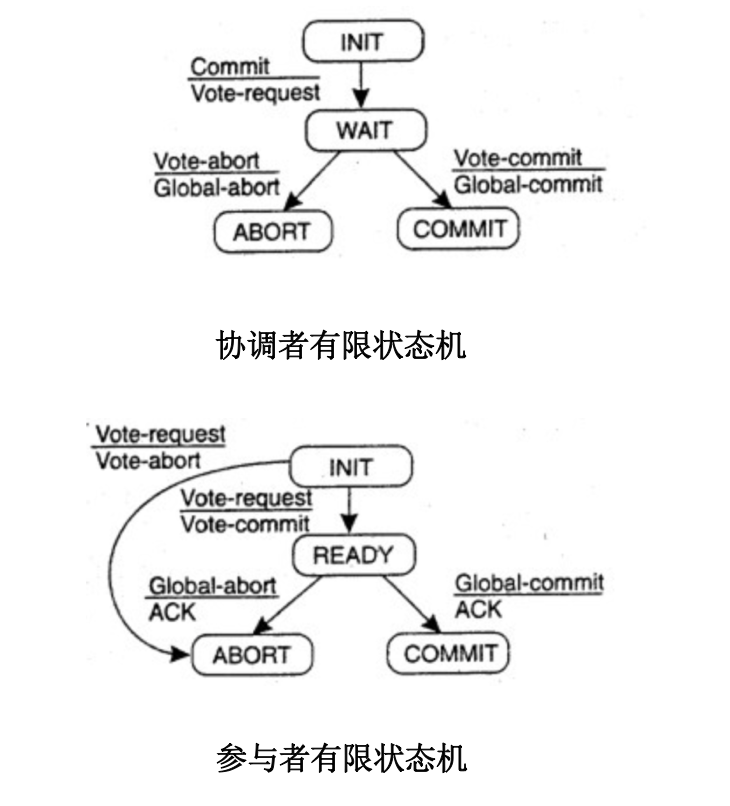

两阶段提交是很常用的解决分布式事务问题的方式，它可以保证分布式事务的原子性（要么所有参与进程都提交事务、要么都取消事务）。在数据一致性环境下，其代表的含义是：要么所有备份数据同时更改某个数值，要么都不更改，以此来达到数据的强一致性。
2PC原则
在实际应用中一般作为数据操作原子性的常用手段，利用该协议能够非常方便地完成所有分布式事务参与者的协调，统一决定事务的提交或回滚，从而能够有效地保证分布式数据一致性，因此二阶段提交协议被广泛地应用在许多分布式系统中。
2PC说明
在两阶段提交协议中，包含了两种角色：协调者与众多参与者。参与者就是实际处理事务的机器，而协调者就是其中一台单独的处理分布式事务的机器。
该算法分为两个阶段：
1.表决阶段(vote)
【协调者视角】协调者向所有参与者发送一个VOTE_REQUEST消息。
【参与者视角】当参与者接受到VOTE_REQUEST消息后，向协调者发送VOTE_COMMIT消息作为回应，告知协调者自己已经做好准备；否则返回VOTE_ABORT消息，告知协调者目前尚无提交事务可能。
2.提交阶段(commit)
【协调者视角】协调者收集来自各个参与者的表决信息。如果所有参与者一致认为可以提交事务，那么协调者决定事务最终可以提交，协调者会向所有参与者发送一个GLOBAL_COMMIT通知参与者进行本地提交；如果所有参与者中有任意一个返回的消息是VOTE_ABORT,协调者决定取消事务，则向所有参与者多播一条GLOBAL_ABORT消息通知其取消事务。
【参与者视角】参与者在接收到协调者发来的消息后将执行响应的操作。协调者如果发现有一个投票是VOTE_ABORT，那么将创建一个GLOBAL_ABORT通知所有的参与者终止该事务。如果都是VOTE_COMMIT,那么协调者将发送一个GLOBAL_COMMIT，告知所有的参与者执行该事务。
2PC状态
协调者、参与者的有限状态机如下所示：

从上述有限状态机来看，有可能存在3种阻塞状态。3种状态都需要等待对方的反馈信息：
- 协调者： WAIT状态
- 参与者： INIT状态、READY状态
如果一个协议包含阻塞态，则明显是一个很脆弱的系统，因为很可能因为有进程陷入崩溃而导致处于阻塞态的对象进入长时间等待，系统无法继续向后运行
对于阻塞状态的应对机制有两种：超时判断机制和参与者互询机制。
- 超时判断机制存在的问题
但是对于处于READY状态的参与者，仅仅引入超时判断机制是不行的。即使发生超时，参与者也不能简单的做出终止事务的决定，因为它不确定协调者到底发出的哪种表决消息(GLOBAL_COMMIT或GLOBAL_ABORT)。如果简单终止事务可能导致数据不一致。
该情况有两种解决方案，第一种是协调者在最终的提交阶段(ABORT或COMMIT)也阻塞等待，并且设置超时时间。如果处在READY状态的参与者超时不回应，则强制剔除该参与者，置为offline下线状态(Codis的实现方案类似这种)。第二种是引入参与者互询机制，让参与者之间相互通信，来决定自己该处于何种状态。
- 参与者互询机制存在的问题
该方案能够让处于阻塞的参与者P询问另一个参与者Q来决定自己什么状态。如果有参与者处于INIT/ABORT/COMMIT的任一状态，则P就可以做出确定的决策。
唯一一种不能使得P做出明确决策的状态是：所有其他参与者都处于READY状态。这种情况下，就必须长时间处于阻塞状态。这也是2PC所无法解决的问题，不过实际应用中该情况较少出现。
2PC特点
- 同步阻塞
在2PC的提交阶段，所有参与该事务的逻辑都将处于阻塞状态，各个参与者都需要等待其他参与者响应。如果在提交过程中，参与者出现故障而导致协调者始终无法获取到所有参与者的响应信息的话，这时协调者只能依靠其自身的超时机制来判断是否需要中断事务，这样的策略显得比较保守。
- 单点问题
当协调者向所有的参与者发送Commit请求之后，发生了局部网络异常或者是协调者在尚未发送完Commit请求之前自身发生了崩溃，导致最终只有部分参与者收到了Commit请求。于是，这部分收到了Commit请求的参与者就会进行事务的提交，而其他没有收到Commit请求的参与者则无法进行事务提交，于是整个分布式系统便出现了数据不一致性现象。
3PC
三阶段提交协议是为了解决2PC协议存在长时间阻塞的办法，其核心是将2PC的提交阶段再次细分为两个阶段：预提交阶段和提交阶段。3PC在实际系统中很少使用，一方面由于2PC长时间阻塞的情况很少发生；另一方面是3PC效率过低。
2PC在Codis中的应用
Codis是一种分布式 Redis 解决方案。该方案中redis纯碎是作为存储节点，不感知集群状态信息。集群状态信息是由zookeeper维护的,这样实现的好处是简单，不用对redis太多修改。处理迁移期间一致性，可以看作是一个两阶段提交。
迁移状态的2PC
Codis支持不停机的数据迁移，它的Proxy模块能够对原生的redis命令进行转发，并且Proxy是无状态的，支持集群化部署。所以在数据迁移过程中必然需要针对Proxy实现迁移数据的强一致性。Codis中使用pre_migrate(待迁移状态), migrate(迁移状态)表示2PC的两种状态, Proxy相当于参与者，zookeeper相当于协调者。
第一阶段：将需要迁移的Slot的online(在线状态)状态更新为pre_migrate状态，并通过zookeeper通知给所有的在线Proxy。迁移程序会等待所有Proxy的回应，等待所有Proxy都已经进入到待迁移状态的回应。
第二阶段：如果迁移程序能够确认所有的Proxy都回复了，即收到了所有Proxy的回应，那么它就可以将该slot状态改为migrate并再次通知所有的Proxy这个slot状态的变更。对于Proxy不响应的情况(通过超时机制)，可以将该无回应的Proxy标记为offline(下线状态)，通过dashboard能够展示出各个Proxy的状态，由管理员来处理异常。
那将Proxy的状态直接从online更行为migrate状态为何不行？如果直接这么做，那么可能有些Proxy知道Slot进入了迁移状态，有些Proxy还不知道（认为是online状态），此时就不能保证slot迁移中，key从一个节点迁移到另一个节点是原子性的了。
为了保证一致性，在slot为pre_migrate状态时是不能对该slot操作的，直到切换到migrate才能再次写（pre_migrate时间短暂，对性能影响较小），锁的粒度比较细。
在pre_migrate期间，不能写入处于迁移状态的slot；在migrate状态下，能够保证对该slot中，每一个key操作是原子性的。
2PC示例详解
上述分析Codis的2PC时涉及到的几个要素：
迁移模块：负责迁移的发起、对zookeeper的操作，相应slot状态的更新等;Proxy处理状态变更：在Proxy接收到slot的状态变更（pre_migrate、migrate）时，作了哪些相关处理;Proxy处理客户端请求：Proxy如何响应客户端redis命令请求的（特别是slot处在迁移状态中）;
迁移任务
该模块主要负责迁移任务的发起，并将更新的状态写入zookeeper以通知集群中的各个Proxy节点。Codis创建了协程定时从zookeeper中读取迁移任务并执行。执行函数大体如下：
//单个slot的迁移
func (t *MigrateTask) migrateSingleSlot(slotId int, to int) error {
// .......
/*
* 完成状态转换：
* ONLINE -> SLOT_STATUS_PRE_MIGRATE -> SLOT_STATUS_MIGRATE
* 状态更新过程中，各个Proxy会收到slot状态变更通知，做相应处理
*/
if err := s.SetMigrateStatus(t.zkConn, from, to); err != nil {
log.ErrorErrorf(err, "set migrate status failed")
return err
}
/*
* 执行迁移命令:
* 将slot中的key逐个的迁移到新的group中
* 在原生Redis中加入了 SLOTSMGRTTAGSLOT 迁移命令
*/
t.Migrate(s, from, to, func(p SlotMigrateProgress)
// 迁移完成，将该slot状态改回 SLOT_STATUS_ONLINE 状态
s.State.Status = models.SLOT_STATUS_ONLINE
s.State.MigrateStatus.From = models.INVALID_ID
s.State.MigrateStatus.To = models.INVALID_ID
// 更新slot状态信息
if err := s.Update(t.zkConn); err != nil {
log.ErrorErrorf(err, "update zk status failed, should be: %+v", s)
return err
}
}
Proxy处理状态迁移
状态迁移中，会重新建立slot与groupId, redis-server的连接关系。并且如果状态为pre_migrate， 会阻塞slot的所有操作，直到状态变为migrate。
//对于从zookeeper收到的状态变更处理函数
func (s *Server) checkAndDoTopoChange(seq int) bool {
// ........
switch act.Type {
// slot状态变更，获取zookeeper中slot的信息
case models.ACTION_TYPE_SLOT_MIGRATE, models.ACTION_TYPE_SLOT_CHANGED,
models.ACTION_TYPE_SLOT_PREMIGRATE:
slot := &models.Slot{}
s.getActionObject(seq, slot)
s.fillSlot(slot.Id)
// .......
}
//更新slotId与groupId的映射关系，建立与redis-server的连接
func (s *Server) fillSlot(i int) {
// ........
/*
* 如果slot变更为SLOT_STATUS_MIGRATE，其所属groupId也变更了
* 需要获取原先的 groupId
*/
var addr = groupMaster(*slotGroup)
if slotInfo.State.Status == models.SLOT_STATUS_MIGRATE {
fromGroup, err := s.topo.GetGroup(slotInfo.State.MigrateStatus.From)
if err != nil {
log.PanicErrorf(err, "get migrate from failed")
}
from = groupMaster(*fromGroup)
if from == addr {
log.Panicf("set slot %04d migrate from %s to %s", i, from, addr)
}
}
// 更新slot所属的groupId
s.groups[i] = slotInfo.GroupId
/*
* s.router.FillSlot()函数主要完成与redis-server的连接
* 同时判断当前状态，如果处于pre_migrate会阻塞客户端对该slot的所有操作
*/
s.router.FillSlot(i, addr, from,
slotInfo.State.Status == models.SLOT_STATUS_PRE_MIGRATE)
}
Proxy处理客户端请求
客户端的redis请求会通过Proxy的路由规则，转发给指定的slot处理。
func (s *Slot) forward(r *Request, key []byte) error {
//这里对于pre_migrate状态会阻塞，该slot中key的所有命令将不执行
s.lock.RLock()
/*
* 执行redis命令前的准备工作:
* 1. 检查slot是否处于迁移状态中
* 2. 强制迁移指定key到新的redis-server
* 3. 检查和后端redis连接是否存在，检查slot是否处于迁移状态中，如果是，强制迁移指定key到新的redis-server
*/
bc, err := s.prepare(r, key)
//将redis命令发向新的redis-server
bc.PushBack(r)
}
从示例代码中，我们能够看到，在pre_migrate状态下，该slot的操作是阻塞的。在migrate状态下，对slot的key操作是原子的：首先向旧的groupId所在的redis-server发送SLOTSMGRTTAGONE命令，完成单个key的迁移，然后向新的groupId所在的redis-server进行该key的操作。
参考阅读
大数据日知录:架构与算法 Ch2-数据一致性协议